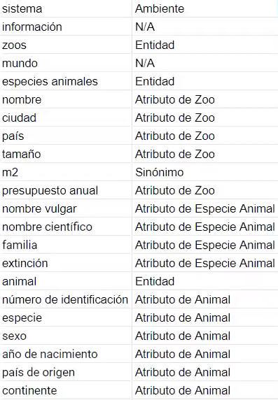

Ejemplo del metodo de barcelona
.
Se quiere diseñar un sistema que almacene información relativa a los zoos existentes en el mundo,
así como las especies animales que éstos albergan. De cada zoo se conoce el nombre, ciudad y pais
donde se encuentra, tamaño (en m2) y presupuesto anual. De cada especie animal se almacena el
nombre vulgar y nombre cientifico, familia a la que pertenece y si se encuentra en peligro de extinción. Además, se debe guardar información sobre cada animal que
los zoos poseen, como su
numero de identificación, especie, sexo, año de nacimiento, país de origen y continente
